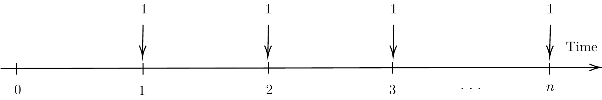
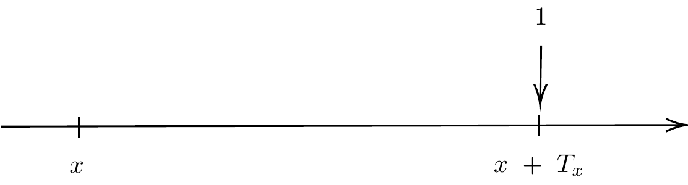

Chapter 4 Solutions to Tutorials
4.1 Solutions to Tutorial 1
The solutions to each question are as follows:
- \(5000 (1.075)^4 = 6677.345703\)
- Let \(i\%\) be the annual rate effective equivalent to \(3\%\) per quarter-effective, \(i = (1.03)^4 - 1\). Hence, the accumulation is \[800(1+i)^{2.7} = 800(1.03)^{4\times2.7} = 1100.859802.\]
- Let \(j\%\) be the monthly rate effective equivalent to \(4.25\%\) per half-year effective, \(j = (1.0425)^{2/12} - 1\). Hence, the accumulation is \[10000(1.0425)^{(2/12)\times27} = 12059.86056.\]
The solutions to each question are as follows:
- \(\frac{1000}{1.075} = 930.232558\).
- \(\frac{100}{(1.03)^7} = 81.309151\).
- Let \(j\%\) be the quarterly rate effective equivalent to \(4.25\%\) per half-year effective, \(j = (1.0425)^{2/4} - 1\). Hence, the present value is \[10000\times (1+j)^{-5} = 10000(1.0425)^{-(5/2)} = 9011.764643.\]
The solutions to each question are as follows:
- 0.3274%
- 3.1988%
The solutions to each question are as follows:
- 500(1.04)(1.05)(1.06) =578.76
- \(2000(1.04)^{3/4}(1.05)(1.06)^{3/4} =2259.299\)
- (1.04)(1.05)(1.06) = 1.15752
The account balance in 3 years is \(3000(1.025)^{3} = 3230.67\).
The amount to be repaid for the loan is 5000(1.1) = 5500.
Let \(X\) be the amount to be deposited now. \[X = \frac{1000}{(1.0575)^4} + \frac{2000}{(1.0575)^8} = 2078.36. \]
At time 3.75 years, Katy has a balance of \(100(1+i)^{15}\). The interest on this balance over the next 3 months is \(100(1+i)^{15}\cdot i\). Taylor earns simple interest on the original amount which is equal to \(500i\cdot\frac{3}{12}\). Therefore, we solve for \(i\) from the following equation: \[ 100(1+i)^{15}\cdot i = 500i\cdot\frac{3}{12},\] which gives \(i = 0.014987.\)
The timeline for the following annuity having cashflow of 1 unit at the end of each of the next \(n\) time units is given in the figure below: 
(More details in the course “Life Contingencies I”). We need to define a random variable \(T_x\) = the remaining future life time of a life aged \(x\).

The quantity of interest is the present value of the death benefit assuming the interest rate of \(i\%\) p.a. effective. It is also a random variable, \[PV = \frac{1}{(1+i)^{T_x}}.\] It turns out that the premium rate of this whole life insurance is \(E[PV]\), the expected value of the present value, \(PV\).
4.2 Solutions to Tutorial 2
The solutions to each question are as follows:
- \((1.03)^3(1.04)^{2.5} (1.02)^{12} = 1.528611\)
- \(5000A(0.5,2.75) = 5000(1.03)(1.04)^{2.5} (1.02)^{9} = 6788.786068\)
- We first find the rate \(j\%\) per month effective that is equivalent to the rate of \(4\%\) per half-year effective. \[j = (1.04)^{1/6} - 1 = 0.00656.\] The accumulated value is \(100A(1+2/12, 3 + 7/12 ) = 100(1+j)^{10}(1.02)^{19} = 155.522118.\)
- \(25000V(0,1.5) = \frac{25000}{(1.03)^3(1.04)^{1.5}} = 21571.39968.\)
- \(8000V(0.25,2.75) = \frac{8000}{(1.03)^2(1.04)^{2.5}(1.02)^{9}} = 5720.455921.\)
- \(V(0.5,1.75) = \frac{1}{(1.03)(1.04)^{2}} = 0.897627.\)
The solutions to each question are as follows:
- With \(i = 7.25\%\) per time period, \(V(4) = 100 (1+i)^4 - 30(1+i)^3 - 30 (1+i)^2 + 100 (1+i) - 30 = 138.041762.\)
- \(V(8) = V(4)\cdot (1+i)^4 = 182.641597.\)
- \(PV(0) = V(4)\cdot (1+i)^{-4} = 104.332903.\)
The solutions to each question are as follows:
- With $ = 6%$ per time period, \(V(5) = 5000 (1+i)^5 - 2000(1+i)^{3.75} - 1000 (1+i)^{2.25} + 4000 (1+i)^{1.5} - 500(1+i) = 6897.948585.\)
- \(V(2) = V(5)(1+i)^{-3} = 5791.650645.\)
- \(PV(0) = V(5)(1+i)^{-5} = 5154.548456.\)
The solutions to each question are as follows:
- \(V(1/1/2019) = 100(1.04)(1.03)^{3.5}(1.015)^{15} - 30 (1.03)^{3.5} (1.015)^{15}- 30 (1.03)^{1.5} (1.015)^{15} + 100 (1.015)^{12} - 30 = 152.955693.\)
- \(PV(0)= V(1/1/2015) = \frac{152.955693}{(1.04)(1.03)^{3.5}(1.015)^{15}} =106.074596.\)
- \(V(1/7/2017) = PV(0)(1.04)(1.03)^3 = 120.546998.\)
4.3 Solutions to Tutorial 3
- Let \(j\) be the effective rate per month equivalent to \(i = 2\)%. We have \[ j = (1.02)^{1/12} - 1= 0.001652. \] Hence,
\[ PV(0) = 200 \ddot{a}^{j}_{120} + 300 \ddot{a}^{j}_{180} \left( \frac{1}{1.02} \right)^{10} = 60148.03. \]
The solutions to each question are as follows:
The cashflows have been splitted into three periods: (a) from time point 0-5, (b) 5-10 and (c) time point 10 onward. \[PV(0) = 1000 ( a^{3\%}_{5} + 1.03^{-5} a^{4\%}_{5} + 1.03^{-5} 1.04^{-5} a^{5\%}_{5}) = 11489.49 \]
We have \[PV(0) = 500 ( \ddot{a}^{3\%}_{5} + 1.03^{-5} \ddot{a}^{4\%}_{5} + 1.03^{-5} 1.04^{-5} \ddot{a}^{5\%}_{10}) = 7229.67 \]
The accumuated value is \[100 (Is)^{3\%}_{5} (1.04)^5 (1.05)^{20} + \left[100 (Is)^{4\%}_{5} + 500 s^{4\%}_{5} \right] (1.05)^{20} + \left[100 (Is)^{5\%}_{20} + 1000 s^{5\%}_{20} \right]= 78929.01 \]
Let \(i_1 = 3\%, i_2 = 4\%\) and \(i_3 = 5\%\). The accumuated value is given by \[\begin{aligned} V(18) &= \left[1000(1+i_1)^5 + 1000(1.02)(1+i_1)^4 + 1000(1.02)^2(1+i_1)^3 + \ldots + 1000(1.02)^4(1+i_1)\right](1.04)^5(1.05)^8 \\ &+ \left[1000(1.02)^5(1+i_2)^5 + 1000(1.02)^6(1+i_2)^4 + 1000(1.02)^7(1+i_2)^3 + \ldots + 1000(1.02)^9(1+i_2)\right](1.05)^8 \\ &+ \left[1000(1.02)^{10}(1+i_3)^8 + 1000(1.02)^{11}(1+i_3)^7 + 1000(1.02)^{12}(1+i_3)^6 + \ldots + 1000(1.02)^{17}(1+i_3)\right] \\ &= 1000(1.02)^5 \left[ \left(\frac{1+i_1}{1.02}\right)^5 + \left(\frac{1+i_1}{1.02}\right)^4 + \ldots + \left(\frac{1+i_1}{1.02}\right) \right](1.04)^5(1.05)^8 \\ &+ 1000(1.02)^{10} \left[ \left(\frac{1+i_2}{1.02}\right)^5 + \left(\frac{1+i_2}{1.02}\right)^4 + \ldots + \left(\frac{1+i_2}{1.02}\right) \right](1.05)^8 \\ &+ 1000(1.02)^{18} \left[ \left(\frac{1+i_3}{1.02}\right)^8 + \left(\frac{1+i_3}{1.02}\right)^7 + \ldots + \left(\frac{1+i_3}{1.02}\right) \right] \end{aligned}\] Let \(1+j_1 = \frac{1+i_1}{1.02}\). Then, \(j_1 = 0.009804\) and \[ \left[ \left(\frac{1+i_1}{1.02}\right)^5 + \left(\frac{1+i_1}{1.02}\right)^4 + \ldots + \left(\frac{1+i_1}{1.02}\right) \right] = \frac{(1+j_1)^5 - 1}{j_1/(1+j_1)} = 5.148995.\] Let \(1+j_2 = \frac{1+i_2}{1.02}\). Then, \(j_2 = 0.019608\) and \[ \left[ \left(\frac{1+i_2}{1.02}\right)^5 + \left(\frac{1+i_2}{1.02}\right)^4 + \ldots + \left(\frac{1+i_2}{1.02}\right) \right] = 5.301921.\] Let \(1+j_3 = \frac{1+i_3}{1.02}\). Then, \(j_3 = 0.029412\) and \[ \left[ \left(\frac{1+i_3}{1.02}\right)^8 + \left(\frac{1+i_3}{1.02}\right)^7 + \ldots + \left(\frac{1+i_3}{1.02}\right) \right] = 9.134790.\] Therefore, \(V(18) = 32814.45\).
The present value is
\[\begin{aligned} PV(0) &= \left( \frac{200}{(1.03)^4} + \frac{200}{(1.03)^5}\right) + 200 a^{0.04}_5 (1.03)^{-5} + 200 a^{0.05}_{3} (1.03)^{-5} (1.04)^{-5} \\ &= 350.2192 + 768.0362 + 386.1574 = 1504.413 \end{aligned}\]
The solutions to each question are as follows:
- \(240000 (1.04)^5 = 291996.7\)
- The interest amounts are \(0.04\times 240000 = 9600.\)
- By the Principle of Equivalence, we have \[ 240000 = X a^{0.04}_{5}. \] This gives X = 53910.51.
- Level installments are payable monthly, which follows \[ 240000 = Y a^{j}_{60}, \] where \(j = (1.04)^{1/12} - 1\). This gives Y = 4412.23.
The person retires in 30 years, when his salary is expected to be \(20000 \times (1.03)^{30} = 48545.25.\) The first payment will be half of this which is equal to 24272.62. The present value at age 60 of his pension is \[ 24272.62 \times \ddot{a}^{0.029412}_{26} = 449717.9\] (the precise value is 449719.051954). Here we use \(\frac{1.05}{1.02} = 1.029412\) and the annuity is paid from the 60th to the 85th birthday inclusive so there are 26 payments made in advance. Therefore, the present value of this at age 30 is \[ 449717.9 \times (1.05)^{-10} \times (1.04)^{-20} = 126002.9. \] (the precise value is 126003.181173)
4.4 Solutions to Tutorial 4
To examine whether the cashflows are equivalent, we compare their present values.
The present value of single payment of amount 14,802.44 at year 10 is \[ PV(0) = \frac{14,802.44}{1.04^{10}} = 10000.\]
The present value of the level annuity of 400 payable yearly in arrears for the next 10 years plus a lump sum of 10,000 is \[ PV(0) = 400 a^{0.04}_{10} +\frac{10000}{1.04^{10}} = 10000.\]
The present value of the level annuity of 1,232.91 payable yearly in arrears for the next 10 years. \[ PV(0) = 1,232.91 a^{0.04}_{10} = 10000.\]
It follows that the values of these cashflows are the same, i.e. equivalent.
The annual yield of this investment \(i\) is the solution of the equation of value: \[ f(i) = -2000(1+i)^8 +300 s^i_8 = 0. \] If we solve using software, we get \(i = 4.2394551%\). Instead of using software, you can also use linear interpolation to approximate the solution.
Working in time unit of half year, the equation of value is \[ f(i) = -5000(1+i)^{12 \times 2} + 300 s^i_{24} = 0. \] The yield \(i\) per half year is \(i = 3.1491266\%\) and hence the annual yield is \(6.397423\%.\)
The equation of value is \[ f(i) = -100(1+i)^{7} + 20 s^i_{3}(1+i)^{4} + 25 s^i_{4} = 0. \] The annual yield is \(12.6209232\%.\)
You are suggested to draw the time line for these cashflows. The equation of value is \[ f(i) = -5 \ddot{s}^i_{3}(1+i)^{9} + 4 s^i_{6} = 0. \] The annual yield is \(5.7285486\%.\)
4.5 Solutions to Tutorial 5
- The monthly repayment can be calculated from this equation \[ X = \frac{30000}{a^j_6} = \frac{30000}{5.931847} = 5057.45,\] where \(j = (1.04)^{1/12} - 1 = 0.003274.\)
The complete loan schedule is illustrated below:
| Time | Repayment | Interest Content | Capital Content | Capital Outstanding |
|---|---|---|---|---|
| 0 | - | - | - | 30000 |
| 1 | \(X\) | 98.21 | 4959.23 | 25040.77 |
| 2 | \(X\) | 81.98 | 4975.47 | 20065.30 |
| 3 | \(X\) | 65.69 | 4991.76 | 15073.54 |
| 4 | \(X\) | 49.35 | 5008.10 | 10065.44 |
| 5 | \(X\) | 32.95 | 5024.50 | 5040.94 |
| 6 | \(X\) | 16.50 | 5040.94 | 0 |
- The monthly repayment can be calculated from this equation \[ X = \frac{800000}{a^j_{120}} = \frac{800000}{88.806749} = 9008.32,\] where \(j = (1.065)^{1/12} - 1 = 0.005262.\)
The capital outstanding after 95th repayment (25 payments left) is \[ L_{95} = 9008.32 a^j_{25} = 210506.84. \]
Hence, the interest content of the 96th repayment is \[ j \times L_{95} = 0.005262 \times 210506.84 = 1107.62.\] The capital content of the 96th repayment is \[ X - 1107.62 = 7900.70. \]
Extending the term of the loan by extra 2 year: The original repayment is \[ X = \frac{100000}{a^{0.07}_{12}} = \frac{100000}{7.942686} = 12590.20,\] The capital outstanding after 6th repayment (6 payments left) is \[ L_{6} = X a^{0.07}_{6} = 60011.68. \] By extending the term of the loan by extra 2 year, the revised repayment \(X'\) can be obtained (for 8 payments) from \[ X' = \frac{L_6}{a^{0.07}_{8}} = 10050.02\]
Missing the next two repayments: From the previous result, the capital outstanding after 6th repayment \(L_6 = 60011.68\). Then in 2 years, with interest at \(7\%\) per annum, this accumulates to \[ L_6 \times (1.07)^2 = 68707.37. \] This must now be repaind by only 4 annual repayments, so the new repayment \(X''\) can be obtained from \[ X'' = \frac{68707.37}{a^{0.07}_{4}} = 20284.35.\]
- The capital outstanding will accumulate (at \(10\%\)) to \[ L_6 \times (1.1)^2 = 72614.14. \]
The new repayment amount \(X'''\) is \[X''' = \frac{72614.14}{a^{0.07}_{4}} = 21437.73.\]
- The new repayment amount will be \[\frac{72614.14}{a^{0.07}_{8}} = 12160.53.\]
You are suggested to draw the time line for these cashflows. Let \(X\) be the level of repayment of the first 6 years (\(2X\) will be repaid after this period for the last 6 years). It can be obtained from \[ 50000 = X(a^{0.04}_6 + 2 a^{0.05}_6 (1.04)^{-6}) = 3769.34.\]
- Let \(X\) be the first annual repayment. Then,
\[ 40000 = X(v + v^2(1.02) + v^3(1.02)^2 + \ldots + v^{10}(1.02)^9),\] where \(v = 1/(1.065).\) By rewriting the above equation, we have \[ 40000 = \frac{X}{1.02}(\frac{1.02}{1.065} + \left( \frac{1.02}{1.065} \right)^2 + \left( \frac{1.02}{1.065} \right)^3 + \ldots + \left( \frac{1.02}{1.065} \right)^{10}),\]
Let \(i' = \left( \frac{1.065}{1.02} -1 \right) = 0.044118.\) Hence, \[ 40000 = \frac{X}{1.02} \cdot a^{i'}_{10},\] and \(X = 5133.91.\)
- We will calculate the capital outstanding after 7th repayment, \(L_7\) (3 payments left). We first find the amount \(X_8\)of the 8th repayment, \[X_8 = X(1.02)^7 = 5897.25.\]
So the capital outstanding after the 7th repayment is equal to the present value of the remaining 3 repayments (see the table below).
- Let \(X\) be the first annual repayment. Then,
| Time | 7 | 8 | 9 | 10 |
|---|---|---|---|---|
| Payment | \(L_7 = ?\) | \(X_8\) | \(X_8 (1.02)\) | \(X_8(1.02)^2\) |
It follows that \[ \begin{aligned} L_7 &= X_8( v + v^2 + v^3) \\ &= \frac{X_8}{(1.02)} a^{i'}_3 \\ &= 15919.94, \end{aligned}\] where \(v\) and \(i'\) are the same as above.
- The interest content of the 8th repayment is \[ L_7 * i = 15919.94 \times 0.065 = 1034.80.\]
4.6 Solutions to Tutorial 6
- Using a time unit of half a year, the effective yield per half year is \[j = (1.08)^{1/2} - 1 = 0.0392305.\] Then,
\[ \begin{aligned} P &= 300 a^j_{\angl{10}} + 11000 (\frac{1}{1.08})^{5} \\ &= 9929.03. \end{aligned} \]
Using a time unit of half a year, the effect yield per half year is \[j = (1.07)^{1/2} - 1 = 0.034408.\]
- Per 1000 nominal, \[ \begin{aligned} P &= 50 a^j_{\angl{20}} + 1000 (\frac{1}{1.07})^{10} \\ &= 1222.79. \end{aligned} \]
- With an income tax rate at 15%,
\[ \begin{aligned} P &= 42.5 a^j_{\angl{20}} + 1000 (\frac{1}{1.07})^{10} \\ &= 1115.62. \end{aligned} \]
3. Since \(i^{(2)} = 2 \times j = 0.0688161 < (1 - t_1)\frac{D}{R} = (1 - 0.15)\frac{0.1}{1} = 0.085.\) Therefore, no capital gain tax (CGT) is payable. \[ \begin{aligned} P &= 42.5 a^j_{\angl{20}} + 1000 (\frac{1}{1.07})^{10} \\ &= 1115.62, \end{aligned} \] which is similar to the previous result.
4. A redepmtion yield of 9% p.a. is equivalent to a yield of \[k = (1.09)^{1/2} - 1 = 0.0440307.\] Since \(k^{(2)} = 2 \times k = 0.0880613 < (1 - t_1)\frac{D}{R} = (1 - 0.15)\frac{0.1}{1} = 0.085.\) Therefore, no capital gain tax (CGT) is payable. \[ \begin{aligned} P &= 42.5 a^k_{\angl{20}} + (1000 - 0.2(1000-P)) (\frac{1}{1.09})^{10} \\ P &= 978.07 (< 1000)., \end{aligned} \]
The solutions are given below:
Using a time unit of half a year, the effect yield per half year is \[j = (1.09)^{1/2} - 1 = 0.0440307.\] Then,
\[ \begin{aligned} P &= 4 a^j_{\angl{30}} + 105 (\frac{1}{1.09})^{15} \\ &= 94.73. \end{aligned} \] 2. In unit of half-year, the timeline of the transaction is shown in the table below:
| Time | 0 | 1 | 2 | \(\cdots\) | 20 | 21 | \(\cdots\) | 30 |
|---|---|---|---|---|---|---|---|---|
| Payment | -94.73 | 4 | 4 | \(\cdots\) | 4 | \(4 + 0.25\) | \(\cdots\) | \(4 + 0.25 + 105\) |
The equation of value is \[ f(i) = -94.73 (1 + i)^{30} + 4 s^i_{\angl{30}} + 0.25 s^i_{\angl{10}} + 105 = 0.\] The change in the tax rate is quite small, so we do not expect a large change in the yield.
By trial and error, in time unit of half a year, we have
\[ \begin{aligned} f(0.044) &= 3.2373 \\ f(0.045) &= -2.6999. \\ \end{aligned} \]
Therefore, the approximate of \(i\) is \[ i \approx 0.044545 \text{ per half-year,} \] and hence 9.107% effective per year.
The solutions are as follows:
- CGT is payable because the price paid is 9000 < 9800 (the redemption amount)
In unit of half-year, the equation of value is \[ f(i) = -9000 (1 + i)^{30} + 0.7 \times 300 s^i_{\angl{30}} + 9800 - 0.2(9800 - 9000) = 0.\]
By trial and error, we obtain
\[ \begin{aligned} f(0.024) &= 380.741 \\ f(0.025) &= -18.541. \\ \end{aligned} \]
Therefore, the approximate of \(i\) is \[ i \approx 0.024954 \text{ per half-year,} \] and hence 5.05% effective per year.
- The investor wishes to obtain a net yield of 7% p.a. effective, which is greater than 5.05%. The price paide will be less than 9000. So CGT is payable.
By the principle of equivalence, \[ \begin{aligned} P &= 210 a^j_{\angl{30}} + (9800 - 0.2(9800 - P)) (\frac{1}{1.07})^{15}, \end{aligned} \] where \[j = (1.07)^{1/2} - 1 = 0.034408.\]
Solving for \(P\) results in \(P = 7258.90 \,( <9800)\).
The solutions are as follows:
- Using a time unit of half a year, the effect yield per half year is \[j = (1.08)^{1/2} - 1 = 0.0392305.\] Then,
\[ \begin{aligned} P &= 3.5 a^j_{\angl{30}} + 100 (\frac{1}{1.08})^{15} \\ &= 92.62. \end{aligned} \]
2. The bond sold to the investor B has 15 half-years to run.From B’s tax position, \(i^{(2)} = 2 \times (1.065^{1/2} - 1) = 0.0639767 < (1 - t_1)\frac{D}{R} = (1 - 0.3)\frac{7}{100} = 0.049.\) Therefore, capital gain tax (CGT) is payable. \[ \begin{aligned} P &= 2.45 a^j_{\angl{15}} + (100 - 0.3(100-P)) (\frac{1}{1.065})^{7.5}, \\ \end{aligned} \] where \[j = (1.065)^{1/2} - 1 = 0.0319884.\] This results in \(P = 89.16\).
- Investor A sold the bond for less than price paid for the bond, so A does not pay CGT.
In unit of half-year, the equation of value is \[ f(i) = -96.62 (1 + i)^{15} + 0.75 \times 3.5 s^i_{\angl{15}} + 89.16 = 0.\]
By trial and error, we obtain
\[ \begin{aligned} f(0.026) &= 0.463 \\ f(0.027) &= -1.192. \\ \end{aligned} \]
Therefore, the approximate of \(i\) is \[ i \approx 0.026280 \text{ per half-year,} \] and hence approximately 5.325% p.a. effective.
4.7 Solutions to Tutorial 7
- The timeline of the transaction is given in the following table.
| Time | 0 | 1 | 2 | 3 | 4 | 5 |
|---|---|---|---|---|---|---|
| Year | 2012 | 2013 | 2014 | 2015 | 2016 | 2017 |
| Cashflow | -100 | 8 | 8 | 8 | 8 | 18 + 100 |
| CPI | 97.22 | 99.17 | 101.32 | 100.25 | 100.36 | 100.53 |
| Real value of cashflow at \(t = 0\) | -100 | \(\frac{(8)(97.22)}{99.17}\) | \(\frac{(8)(97.22)}{101.32}\) | \(\frac{(8)(97.22)}{100.25}\) | \(\frac{(8)(97.22)}{100.36}\) | \(\frac{(8)(97.22)}{100.53}\) |
| Real value of cashflow at \(t = 0\) | -100 | = 7.84 | = 7.68 | = 7.76 | = 7.75 | = 114.11 |
The real yield \(i'\) p.a. effective solve the equation of value as
follows:
\[f(i') = -100 + 7.84 v + 7.68v^2 + 7.76v^3 + 7.75v^4 + 114.11v^5 = 0,\]
where \(v = 1/(1 + i')\).
This gives \(i' \approx 8.82\%\).
We know that when the annual rate of inflation is constant and equal to \(q\), the real yield \(i'\) and the monetary yield \(i\) satisfies \[(1 +i) = ( 1 + q)(1+i').\]
- Given
\(i =0.06\) and \(q = 0.025\), we have \[ i' = \frac{1.06}{1.025} - 1 = 0.0341463 = 3.4146341\%.\] 2. Given
\(i =0.06\) and \(i' = 0.0425\), we have \[ i' = \frac{1.06}{1.0425} - 1 = 0.0167866 = 1.6786571\%.\]
3. Given \(q = 0.03\) p.a. for 9 months and \(q = 0.0325\) p.a. for the next 3 months, \[ i' = \frac{1.06}{(1.03)^{9/12}(1.0325)^{3/12}} - 1 = 0.0285027 = 2.8502689\%.\]
- The timeline of the transaction is given in the following table.
| Time | 0 | 1 | 2 | 3 |
|---|---|---|---|---|
| Year | 2015 | 2016 | 2017 | 2018 |
| Cashflow | -95 | 6 | 6 | 106 |
| Real value of cashflow at \(t = 0\) | -95 | 5.81 | 5.41 | 88.70 |
1. The equation of value is\[ f(i) = -95 + 6 a^i_{\angl{3}} + \frac{100}{(1+i)^3} = 0.\]
This gives \(i \approx 7.938\%\).
2. The real yield \(i'\) p.a. effective solve the equation of value as
follows:
\[f(i') = -95 + 5.81 v + 5.41v^2 + 88.70v^3 = 0,\]
where \(v = 1/(1 + i')\).
This gives \(i' \approx 1.80\%\).
- Question 4 is not examinable.
Investment A:
| Date | Real payment (monetary payment \(\times \frac{\text{Q(APR 2018)}}{\text{Q(Date)}}\)) |
|---|---|
| 1 APR 2018 | \(-110\) |
| 1 OCT 2018 | \(4.5 \times \frac{\text{Q(APR 2018)}}{\text{Q(OCT 2018)} } = 4.5 \times \frac{\text{Q(APR 2018)}}{\text{Q(APR 2018)} \times (1.025)^{1/2}} = 4.5 \times \frac{1}{ (1.025)^{1/2}}\) |
| 1 APR 2019 | \(4.5 \times \frac{\text{Q(APR 2018)}}{\text{Q(APR 2019)} } = 4.5 \times \frac{\text{Q(APR 2018)}}{\text{Q(APR 2018)} \times (1.025)^{1}} = 4.5 \times \frac{1}{ (1.025)^{1}}\) \(\vdots\) |
| 1 APR 2028 | \((100 + 4.5) \times \frac{\text{Q(APR 2018)}}{\text{Q(APR 2028)} } = (100 + 4.5) \times \frac{\text{Q(APR 2018)}}{\text{Q(APR 2018)} \times (1.025)^{10}} = (100 + 4.5) \times \frac{1}{ (1.025)^{10}}\) |
The real yield \(i'\) p.a. effective solve the equation of value as follows: \[f(i') = -110 + 4.5\left( \frac{1}{((1+i')(1.025))^{1/2}} + \frac{1}{((1+i')(1.025))^{1}} + \cdots + \frac{1}{((1+i')(1.025))^{10}}\right)= 0,\] Letting \((1+ j) = ((1+i')(1.025))^{1/2}\) gives the equation in terms of \(j\) as follows:
\[ f(j) = -110 + 4.5 a^j_{\angl{20}} + \frac{100}{(1+j)^{20}} = 0.\] By linear approximation, we obtain \[j \approx 0.0378\] and the real yield per annum is \[i' \approx 0.0507.\]
Investment B:
The coupon payment is 2 THB increased with inflation, paid every 6 months and the redemption payment is 100 THB also increased with inflation.
We first increase the payments with inflation approximately lagged by 6 months to see how much is acually paid, which gives nominal payments and then calculate their real values in terms of their purchasing power at 1 APR 2018.
| Date | CPI (Date \(-\) 6/12) | Nominal payment at Date | Real payment |
|---|---|---|---|
| 1 OCT 2018 | \(145.68\) | \(2 \times \frac{145.68}{100.24}\) | \(2 \times \frac{145.68}{100.24} \frac{\text{Q(APR 2018)}}{\text{Q(OCT 2018)} } = 2 \times \frac{145.68}{100.24} \times \frac{1}{ (1.025)^{1/2}}\) |
| 1 APR 2019 | \(145.68 \times 1.025^{1/2}\) | \(2 \times \frac{145.68 \times 1.025^{1/2}}{100.24}\) | \(2 \times \frac{145.68 \times 1.025^{1/2}}{100.24} \frac{\text{Q(APR 2018)}}{\text{Q(APR 2019)} } = 2 \times \frac{145.68 }{100.24} \times \frac{1}{ (1.025)^{1/2}}\) |
| \(\vdots\) | \(\vdots\) | \(\vdots\) | \(\vdots\) |
| 1 OCT 2027 | \(145.68 \times 1.025^{9}\) | \(2 \times \frac{145.68 \times 1.025^{9}}{100.24}\) | \(2 \times \frac{145.68 \times 1.025^{9}}{100.24} \frac{\text{Q(APR 2018)}}{\text{Q(OCT 2027)} } = 2 \times \frac{145.68 }{100.24} \times \frac{1}{ (1.025)^{1/2}}\) |
| 1 APR 2028 | \(145.68 \times 1.025^{9.5}\) | \((100 + 2) \times \frac{145.68 \times 1.025^{9.5}}{100.24}\) | \((100 + 2) \times \frac{145.68 \times 1.025^{9.5}}{100.24} \frac{\text{Q(APR 2018)}}{\text{Q(APR 2028)} } = (100 + 2) \times \frac{145.68 }{100.24} \times \frac{1}{ (1.025)^{1/2}}\) |
The present value at 1 APR 2018 of the real payments at the real yield \(i'\) p.a. is \[ f(i') = -135 + 2 \times \frac{145.68 }{100.24} \times \frac{1}{ (1.025)^{1/2}} \times(2 a^{2(i')}_{\angl{10}}) + 100 \times \frac{145.68 }{100.24} \times \frac{1}{ (1.025)^{1/2}} \times \frac{1}{(1+i')^{10}} = 0.\] We solve for \(i'\), which results in \[i' \approx 0.0481\] per annum.
2. Investment A yields the higher real rate of return than investment B, hence investment A is preferred. - Investment A: The payment received in 5 years is \[50000(1.025)(1.035)(1.045)(1.055)(1.065) = A.\] Hence, the real payment in terms of its purchasing power at 15 Jan 2013 is \[ A \times \frac{Q(\text{Jan 13})}{Q(\text{Jan 18})}.\]
Therefore, the real yield \(i\%\) p.a. is \[50000 (1 + i')^5 = A \times \frac{Q(\text{Jan 13})}{Q(\text{Jan 18})} = A \times \frac{100}{114.83},\] which gives \(i' = 1.64\%.\)
Investment B: First we find an annual income of the annuity. \[\text{Annual income } = \frac{50000}{a^{0.06}_{\angl{5}}} = 1.186982\times 10^{4}.\]
The real yield on investment B is the solution \(i'\) p.a. to the equation follows: \[50000 = \left( \frac{100}{104.17} v + \frac{100}{110.17} v^2 + \cdots + \frac{100}{114.83}v^5 \right)\times 1.186982\times 10^{4},\] At \(1.64\%\), the RHS of the above equation is equal to the price of B at \(1.64\% = 51,217.65 .\)
Therefore, the real yield of B is greater than 1.64%. Hence B gives greater real yield.
4.8 Solutions to Tutorial 8
Let \(i'\)% be the real rate of return (yield) per annum earned on this investment. It follows that \[(1 + i')^3 = (1.025)(1.035)(1.045)\frac{100}{108.83} = 0.00618.\]
The drift rate is \((0.24)(4) = 1\) per year and the variance rate is \((9)(4) = 36\) per year.
At the end of 6 months, the probability distribution of the cash position is normally distributed with mean \[35 + 1(\frac{1}{2}) = 35.5\] and variance \[36(\frac{1}{2}) = 18.\] Therefore, the expected cash position at the end of 6 months is 35.5.
- The estimates of the standard deviation of the are given by \[ \begin{aligned} s &= \sqrt{\frac{1}{n-1} \sum_{i=1}^n (u_i - \bar{u})^2 } \\ &= \sqrt{\frac{1}{n-1} \sum_{i=1}^n u_i^2 - \frac{1}{n(n-1)} \left(\sum_{i=1}^n u_i \right)^2 } \\ &= \sqrt{\frac{1}{62-1}(0.0042) - \frac{1}{62(62-1)}(0.25) } \\ &= 0.0072337. \end{aligned} \]
Because we are using observations at intervals of \(\tau\) measured in years, the estimate of the is given by \[ \hat{\sigma} = \frac{s}{\sqrt{\tau}}.= \sqrt{252}s = 0.1148319 = 11.48\%.\] 4. The is approximately \[\hat{\sigma}/\sqrt{2n} = \frac{0.1148319}{\sqrt{2(62)}} = 0.0103122 = 1.03\%.\]
- Recall that the drift rate is \((0.24)(4) = 1\) per year and the variance rate is \((9)(4) = 36\) per year. It follows that \[X(1) \sim N(X(0) + 1, 36) = (X(0) + 1) + 6N(0,1),\] where \(X(0)\) is the company’s initial cash position.
The company’s initial cash position so that the company has a less than 5% chance of a negative cash position by the end of 1 year satisfies \[ \begin{aligned} \Pr((X(0) + 1) + 6Z < 0) &= 0.05 \\ \Pr( Z < \frac{-(X(0) + 1)}{6}) &= 0.05 \\ \frac{X(0) + 1}{6} = 1.645, \end{aligned}\] where \(Z \sim N(0,1)\). This implies that \(X(0) = 8.87.\)
- Following that the proportional return on stocks are normally distributed, the discrete-time version of the model is \[\begin{aligned} \frac{\Delta S}{S} &= \mu \Delta t + \sigma \sqrt{\Delta t} \epsilon \end{aligned} \] where \(\epsilon\) has a standard normal distribution. Hence, \[ \begin{aligned} S_t &= S_{t-1} + \Delta S \\ &= S_{t-1} + S_{t-1}(\mu \Delta t + \sigma \sqrt{\Delta t} \epsilon)\\ &= S_{t-1}\cdot(1+\mu \Delta t + \sigma \sqrt{\Delta t} \epsilon) \end{aligned} \] where in this case \(\Delta t = 1/12, \mu = 0.08\) and \(\sigma = 0.3\).
The simulated values of the stock price path at time 3 months are shown in the following table.
| Time (t) | \(S_t\) |
|---|---|
| \(\Delta t\) | \(40(1 + (0.08)(1/12) + (0.3) \sqrt{(1/12)} (0.62)) = 42.414\) |
| \(2\Delta t\) | \(42.414(1 + (0.08)(1/12) + (0.3) \sqrt{(1/12)} (1.34)) = 47.619\) |
| \(3\Delta t\) | \(42.414(1 + (0.08)(1/12) + (0.3) \sqrt{(1/12)} (-0.76)) = 44.803\) |
The questions are similar to the previous tutorial. Only answers are given here.
CPI(OCT 2015) = 96.
| Date | (Monetary) Payment |
|---|---|
| Jul 2016 | \(\frac{2\%}{2}\frac{\text{Q(Date - 3/12)}}{\text{Q(Jan 16 - 3/12)}} = 1.03125 = M_1\) |
| Jan 2017 | \(\frac{2\%}{2}\frac{\text{Q(Oct 16)}}{\text{Q(Oct 15)}} = 1.0625 = M_2\) |
| Jul 2017 | \(\frac{2\%}{2}\frac{\text{Q(Apr 17)}}{\text{Q(Oct 15)}} = 1.09375 = M_3\) |
| Jan 2018 | \((100+1)\frac{\text{Q(Oct 17)}}{\text{Q(Oct 15)}} = 116.7812= M_4\) |
3.| Date | Real Payment \(=\) Monetary Payment \(\times \frac{\text{Q(Jan 16)}}{\text{Q(Date)}}\) |
|---|---|
| Jul 2016 | \(1.03125\frac{97}{100} = 1.0003125\) |
| Jan 2017 | \(1.0625\frac{97}{104} = 0.9909856\) |
| Jul 2017 | \(1.09375\frac{97}{109} = 0.9733372\) |
| Jan 2018 | \(116.7812\frac{97}{112} = 101.1408607\) |
4. The purchase price of the bond per 100 THB nominal if the investor obtained a real redemption yield of 0.79% p.a. effective on the bond satisfies\[ \begin{aligned} P &= \frac{1.0003125}{(1+0.0079)^{1/2}} + \frac{0.9909856}{(1+0.0079)^{2/2}} + \frac{0.9733372}{(1+0.0079)^{3/2}} + \frac{101.1408607}{(1+0.0079)^{4/2}}\\ &= 102.50. \end{aligned} \]